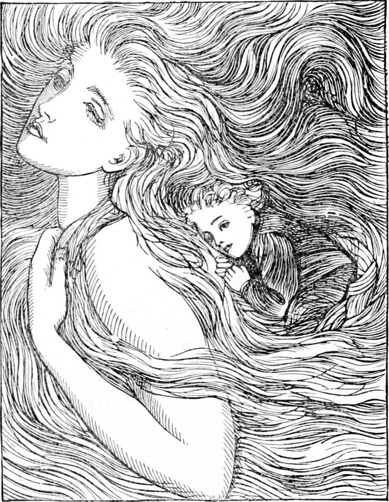
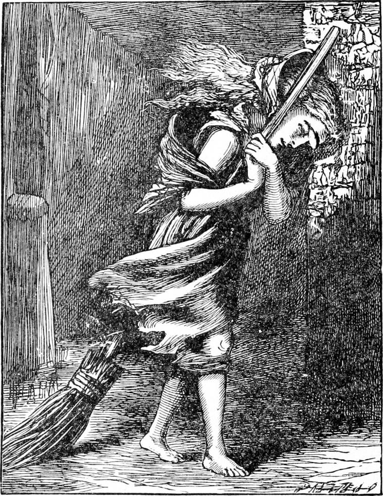
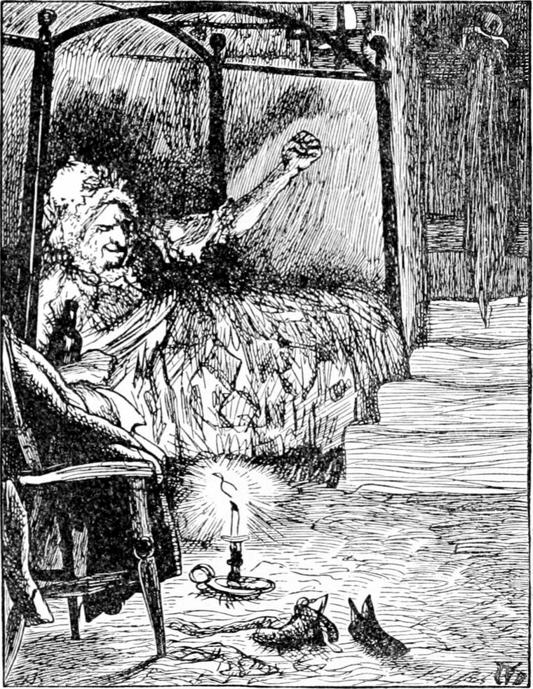
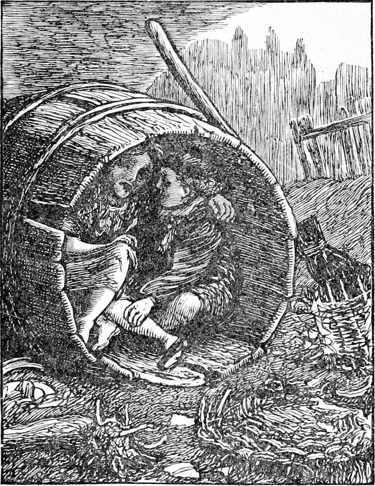

AND as she stood looking towards London, Diamond saw that she was trembling.
“Are you cold, North Wind?” he asked.
“No, Diamond,” she answered, looking down upon him with a smile; “I am only getting ready to sweep one of my rooms. Those careless, greedy, untidy children make it in such a mess.”
As she spoke he could have told by her voice, if he had not seen with his eyes, that she was growing larger and larger. Her head went up and up towards the stars; and as she grew, still trembling through all her body, her hair also grew—longer and longer, and lifted itself from her head, and went out in black waves. The next moment, however, it fell back around her, and she grew less and less till she was only a tall woman. Then she put her hands behind her head, and gathered some of her hair, and began weaving and knotting it together. When she had done, she bent down her beautiful face close to his, and said—
“Diamond, I am afraid you would not keep hold of me, and if I were to drop you, I don't know what might happen; so I have been making a place for you in my hair. Come.”
Diamond held out his arms, for with that grand face looking at him, he believed like a baby. She took him in her hands, threw him over her shoulder, and said, “Get in, Diamond.”
And Diamond parted her hair with his hands, crept between, and feeling about soon found the woven nest. It was just like a pocket, or like the shawl in which gipsy women carry their children. North Wind put her hands to her back, felt all about the nest, and finding it safe, said—

“Are you comfortable, Diamond?”
“Yes, indeed,” answered Diamond.
The next moment he was rising in the air. North Wind grew towering up to the place of the clouds. Her hair went streaming out from her, till it spread like a mist over the stars. She flung herself abroad in space.
Diamond held on by two of the twisted ropes which, parted and interwoven, formed his shelter, for he could not help being a little afraid. As soon as he had come to himself, he peeped through the woven meshes, for he did not dare to look over the top of the nest. The earth was rushing past like a river or a sea below him. Trees and water and green grass hurried away beneath. A great roar of wild animals rose as they rushed over the Zoological Gardens, mixed with a chattering of monkeys and a screaming of birds; but it died away in a moment behind them. And now there was nothing but the roofs of houses, sweeping along like a great torrent of stones and rocks. Chimney-pots fell, and tiles flew from the roofs; but it looked to him as if they were left behind by the roofs and the chimneys as they scudded away. There was a great roaring, for the wind was dashing against London like a sea; but at North Wind's back Diamond, of course, felt nothing of it all. He was in a perfect calm. He could hear the sound of it, that was all.
By and by he raised himself and looked over the edge of his nest. There were the houses rushing up and shooting away below him, like a fierce torrent of rocks instead of water. Then he looked up to the sky, but could see no stars; they were hidden by the blinding masses of the lady's hair which swept between. He began to wonder whether she would hear him if he spoke. He would try.
“Please, North Wind,” he said, “what is that noise?”
From high over his head came the voice of North Wind, answering him, gently—
“The noise of my besom. I am the old woman that sweeps the cobwebs from the sky; only I'm busy with the floor now.”
“What makes the houses look as if they were running away?”
“I am sweeping so fast over them.”
“But, please, North Wind, I knew London was very big, but I didn't know it was so big as this. It seems as if we should never get away from it.”
“We are going round and round, else we should have left it long ago.”
“Is this the way you sweep, North Wind?”
“Yes; I go round and round with my great besom.”
“Please, would you mind going a little slower, for I want to see the streets?”
“You won't see much now.”
“Why?”
“Because I have nearly swept all the people home.”
“Oh! I forgot,” said Diamond, and was quiet after that, for he did not want to be troublesome.
But she dropped a little towards the roofs of the houses, and Diamond could see down into the streets. There were very few people about, though. The lamps flickered and flared again, but nobody seemed to want them.
Suddenly Diamond espied a little girl coming along a street. She was dreadfully blown by the wind, and a broom she was trailing behind her was very troublesome. It seemed as if the wind had a spite at her—it kept worrying her like a wild beast, and tearing at her rags. She was so lonely there!
“Oh! please, North Wind,” he cried, “won't you help that little girl?”
“No, Diamond; I mustn't leave my work.”
“But why shouldn't you be kind to her?”
“I am kind to her. I am sweeping the wicked smells away.”

“But you're kinder to me, dear North Wind. Why shouldn't you be as kind to her as you are to me?”
“There are reasons, Diamond. Everybody can't be done to all the same. Everybody is not ready for the same thing.”
“But I don't see why I should be kinder used than she.”
“Do you think nothing's to be done but what you can see, Diamond, you silly! It's all right. Of course you can help her if you like. You've got nothing particular to do at this moment; I have.”
“Oh! do let me help her, then. But you won't be able to wait, perhaps?”
“No, I can't wait; you must do it yourself. And, mind, the wind will get a hold of you, too.”
“Don't you want me to help her, North Wind?”
“Not without having some idea what will happen. If you break down and cry, that won't be much of a help to her, and it will make a goose of little Diamond.”
“I want to go,” said Diamond. “Only there's just one thing—how am I to get home?”
“If you're anxious about that, perhaps you had better go with me. I am bound to take you home again, if you do.”
“There!” cried Diamond, who was still looking after the little girl. “I'm sure the wind will blow her over, and perhaps kill her. Do let me go.”
They had been sweeping more slowly along the line of the street. There was a lull in the roaring.
“Well, though I cannot promise to take you home,” said North Wind, as she sank nearer and nearer to the tops of the houses, “I can promise you it will be all right in the end. You will get home somehow. Have you made up your mind what to do?”
“Yes; to help the little girl,” said Diamond firmly.
The same moment North Wind dropt into the street and stood, only a tall lady, but with her hair flying up over the housetops. She put her hands to her back, took Diamond, and set him down in the street. The same moment he was caught in the fierce coils of the blast, and all but blown away. North Wind stepped back a step, and at once towered in stature to the height of the houses. A chimney-pot clashed at Diamond's feet. He turned in terror, but it was to look for the little girl, and when he turned again the lady had vanished, and the wind was roaring along the street as if it had been the bed of an invisible torrent. The little girl was scudding before the blast, her hair flying too, and behind her she dragged her broom. Her little legs were going as fast as ever they could to keep her from falling. Diamond crept into the shelter of a doorway, thinking to stop her; but she passed him like a bird, crying gently and pitifully.
“Stop! stop! little girl,” shouted Diamond, starting in pursuit.
“I can't,” wailed the girl, “the wind won't leave go of me.”
Diamond could run faster than she, and he had no broom. In a few moments he had caught her by the frock, but it tore in his hand, and away went the little girl. So he had to run again, and this time he ran so fast that he got before her, and turning round caught her in his arms, when down they went both together, which made the little girl laugh in the midst of her crying.
“Where are you going?” asked Diamond, rubbing the elbow that had stuck farthest out. The arm it belonged to was twined round a lamp-post as he stood between the little girl and the wind.
“Home,” she said, gasping for breath.
“Then I will go with you,” said Diamond.
And then they were silent for a while, for the wind blew worse than ever, and they had both to hold on to the lamp-post.
“Where is your crossing?” asked the girl at length.
“I don't sweep,” answered Diamond.
“What do you do, then?” asked she. “You ain't big enough for most things.”
“I don't know what I do do,” answered he, feeling rather ashamed. “Nothing, I suppose. My father's Mr. Coleman's coachman.”
“Have you a father?” she said, staring at him as if a boy with a father was a natural curiosity.
“Yes. Haven't you?” returned Diamond.
“No; nor mother neither. Old Sal's all I've got.” And she began to cry again.
“I wouldn't go to her if she wasn't good to me,” said Diamond.
“But you must go somewheres.”
“Move on,” said the voice of a policeman behind them.
“I told you so,” said the girl. “You must go somewheres. They're always at it.”
“But old Sal doesn't beat you, does she?”
“I wish she would.”
“What do you mean?” asked Diamond, quite bewildered.
“She would if she was my mother. But she wouldn't lie abed a-cuddlin' of her ugly old bones, and laugh to hear me crying at the door.”
“You don't mean she won't let you in to-night?”
“It'll be a good chance if she does.”
“Why are you out so late, then?” asked Diamond.
“My crossing's a long way off at the West End, and I had been indulgin' in door-steps and mewses.”
“We'd better have a try anyhow,” said Diamond. “Come along.”
As he spoke Diamond thought he caught a glimpse of North Wind turning a corner in front of them; and when they turned the corner too, they found it quiet there, but he saw nothing of the lady.
“Now you lead me,” he said, taking her hand, “and I'll take care of you.”
The girl withdrew her hand, but only to dry her eyes with her frock, for the other had enough to do with her broom. She put it in his again, and led him, turning after turning, until they stopped at a cellar-door in a very dirty lane. There she knocked.
“I shouldn't like to live here,” said Diamond.
“Oh, yes, you would, if you had nowhere else to go to,” answered the girl. “I only wish we may get in.”
“I don't want to go in,” said Diamond.
“Where do you mean to go, then?”
“Home to my home.”
“Where's that?”
“I don't exactly know.”
“Then you're worse off than I am.”
“Oh no, for North Wind—” began Diamond, and stopped, he hardly knew why.
“What?” said the girl, as she held her ear to the door listening.
But Diamond did not reply. Neither did old Sal.
“I told you so,” said the girl. “She is wide awake hearkening. But we don't get in.”
“What will you do, then?” asked Diamond.
“Move on,” she answered.
“Where?”
“Oh, anywheres. Bless you, I'm used to it.”
“Hadn't you better come home with me, then?”
“That's a good joke, when you don't know where it is. Come on.”

“But where?”
“Oh, nowheres in particular. Come on.”
Diamond obeyed. The wind had now fallen considerably. They wandered on and on, turning in this direction and that, without any reason for one way more than another, until they had got out of the thick of the houses into a waste kind of place. By this time they were both very tired. Diamond felt a good deal inclined to cry, and thought he had been very silly to get down from the back of North Wind; not that he would have minded it if he had done the girl any good; but he thought he had been of no use to her. He was mistaken there, for she was far happier for having Diamond with her than if she had been wandering about alone. She did not seem so tired as he was.
“Do let us rest a bit,” said Diamond.
“Let's see,” she answered. “There's something like a railway there. Perhaps there's an open arch.”

They went towards it and found one, and, better still, there was an empty barrel lying under the arch.
“Hallo! here we are!” said the girl. “A barrel's the jolliest bed going—on the tramp, I mean. We'll have forty winks, and then go on again.”
She crept in, and Diamond crept in beside her. They put their arms round each other, and when he began to grow warm, Diamond's courage began to come back.
“This is jolly!” he said. “I'm so glad!”
“I don't think so much of it,” said the girl. “I'm used to it, I suppose. But I can't think how a kid like you comes to be out all alone this time o' night.”
She called him a kid, but she was not really a month older than he was; only she had had to work for her bread, and that so soon makes people older.
“But I shouldn't have been out so late if I hadn't got down to help you,” said Diamond. “North Wind is gone home long ago.”
“I think you must ha' got out o' one o' them Hidget Asylms,” said the girl. “You said something about the north wind afore that I couldn't get the rights of.”
So now, for the sake of his character, Diamond had to tell her the whole story.
She did not believe a word of it. She said he wasn't such a flat as to believe all that bosh. But as she spoke there came a great blast of wind through the arch, and set the barrel rolling. So they made haste to get out of it, for they had no notion of being rolled over and over as if they had been packed tight and wouldn't hurt, like a barrel of herrings.
“I thought we should have had a sleep,” said Diamond; “but I can't say I'm very sleepy after all. Come, let's go on again.”
They wandered on and on, sometimes sitting on a door-step, but always turning into lanes or fields when they had a chance.
They found themselves at last on a rising ground that sloped rather steeply on the other side. It was a waste kind of spot below, bounded by an irregular wall, with a few doors in it. Outside lay broken things in general, from garden rollers to flower-pots and wine-bottles. But the moment they reached the brow of the rising ground, a gust of wind seized them and blew them down hill as fast as they could run. Nor could Diamond stop before he went bang against one of the doors in the wall. To his dismay it burst open. When they came to themselves they peeped in. It was the back door of a garden.
“Ah, ah!” cried Diamond, after staring for a few moments, “I thought so! North Wind takes nobody in! Here I am in master's garden! I tell you what, little girl, you just bore a hole in old Sal's wall, and put your mouth to it, and say, 'Please, North Wind, mayn't I go out with you?' and then you'll see what'll come.”
“I daresay I shall. But I'm out in the wind too often already to want more of it.”
“I said with the North Wind, not in it.”
“It's all one.”
“It's not all one.”
“It is all one.”
“But I know best.”
“And I know better. I'll box your ears,” said the girl.
Diamond got very angry. But he remembered that even if she did box his ears, he musn't box hers again, for she was a girl, and all that boys must do, if girls are rude, is to go away and leave them. So he went in at the door.
“Good-bye, mister” said the girl.
This brought Diamond to his senses.
“I'm sorry I was cross,” he said. “Come in, and my mother will give you some breakfast.”
“No, thank you. I must be off to my crossing. It's morning now.”
“I'm very sorry for you,” said Diamond.
“Well, it is a life to be tired of—what with old Sal, and so many holes in my shoes.”
“I wonder you're so good. I should kill myself.”
“Oh, no, you wouldn't! When I think of it, I always want to see what's coming next, and so I always wait till next is over. Well! I suppose there's somebody happy somewheres. But it ain't in them carriages. Oh my! how they do look sometimes—fit to bite your head off! Good-bye!”
She ran up the hill and disappeared behind it. Then Diamond shut the door as he best could, and ran through the kitchen-garden to the stable. And wasn't he glad to get into his own blessed bed again!